土日・祝日・年末年始の日直勤務表を、職員名簿とルールから自動で作成するアプリです。 これまで手作業で組んでいた「誰と誰を、どの日に」を、120日ルール・同一課の回避・ ペアの重複回避・育休や行事による除外などを踏まえて自動で割り当てます。
作成した勤務表は履歴として保存され、変更届による交代もこのアプリの上で反映できます。 Webブラウザだけで動き、サーバーは必要ありません。
このアプリのデータは使っているパソコンのブラウザの中だけに保存されています。 サーバーには何も送られません。つまり、ブラウザの履歴・データを消したり、パソコンが替わったりすると、 それまでのデータはすべて消えます。
だからこの手引きは、最初の章を「バックアップからの復元」から始めています。 作業の区切りごとにバックアップを作る習慣をつけてください。
画面の上に処理期（しょりき）の選択欄があり、その下にタブが7つ並びます。 作業はふつう、左のタブから右へ順に進みます。
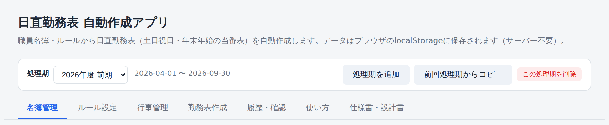
| タブ | 何をするところか |
|---|---|
| 名簿管理 | その処理期の職員名簿を取り込む・確認する |
| ルール設定 | 120日ルールなどの数値、常時除外する所属、育休・産休等の期間を設定する |
| 行事管理 | 産業まつり・選挙などの行事と、その前後に外す所属を登録する |
| 勤務表作成 | 対象日を抽出して勤務表を自動作成し、決裁のうえ確定する |
| 履歴・確認 | バックアップ、確定済み履歴の確認、交代の反映、担当実績の確認 |
| 使い方 | アプリ内の説明。分からないことを言葉で検索もできる |
| 仕様書・設計書 | ルールの根拠や内部の仕組みの詳細 |
処理期とは、勤務表を作る半年の区切りのことです（例：2026年度 前期＝4〜9月、後期＝10〜翌3月）。 名簿もルールも勤務表も、いま選んでいる処理期に対して登録されます。 画面の一番上で、いま何の処理期を選んでいるかを必ず確認してから作業してください。
勤務表は、作っただけでは履歴に残りません。内容を確認・決裁したうえで 「決裁が完了したことを確認しました」にチェックを入れて、はじめて確定できます。
勤務表を確定したとき、交代を反映したときは、その場で 「バックアップを作成してください」というお知らせが自動的に出ます。 面倒でも、そこで作ってください。消えてからでは戻せません。
このアプリのデータはパソコンのブラウザの中にしかありません。 そのため、担当が替わったとき・パソコンを入れ替えたとき・別のパソコンで作業するときは、 まず前任者（または前回の自分）が作ったバックアップファイルを読み込むところから始めます。
復元すると、職員名簿・ルール設定・行事・確定済み履歴・育休等の期間まで、すべてが引き継がれます。 ゼロから名簿を取り込み直す必要はありません。
この章は飛ばして、第2章「勤務表を作る」から始めてください。 そのかわり、第2章の最後に出てくるバックアップの作成は必ず行ってください。
.json）。
ファイル名は 日直勤務表バックアップ_2026-09-17.json のような形です。復元する前の画面です。名簿はまだ何も入っていません。
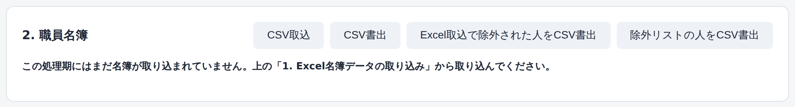
.json ファイルを選ぶ
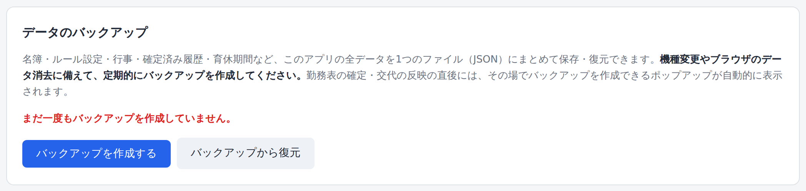
復元すると、いまこのパソコンに入っているデータはすべて消えて、 バックアップの内容に置き換わります。すでに作業を始めていた場合は、 先に「バックアップを作成する」で今の状態を書き出してから復元してください。
「名簿管理」タブを開いて、職員名簿が表示されていれば成功です。 人数（例：150名（係長級 120 / 主事級 30））が引き継ぎの内容と合っているか確認してください。
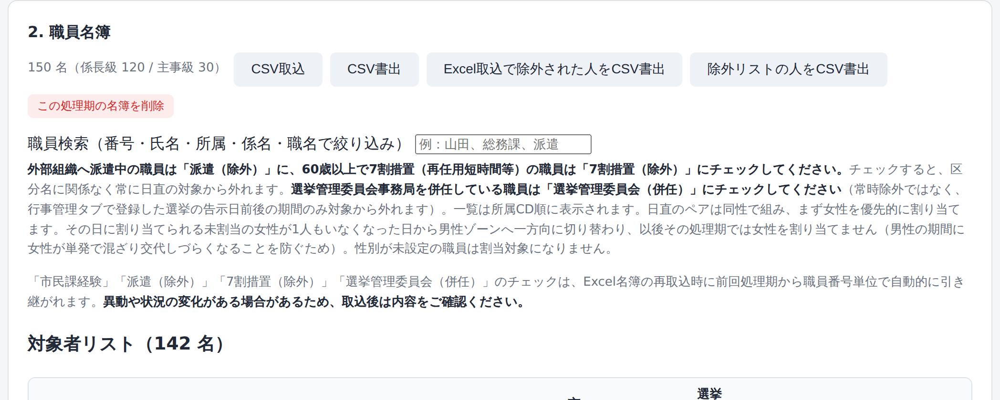
あわせて、次の点も確認しておくと安心です。
| 症状 | 対処 |
|---|---|
| 「バックアップファイルの読み込みに失敗しました」と出る | ファイルが壊れているか、.json 以外のファイルを選んでいます。
引き継ぎ元にもう一度ファイルをもらってください。 |
| 「バックアップファイルの内容が正しくありません」と出る | このアプリのバックアップではないファイルです。ファイル名と中身を確認してください。 |
| 復元したのに名簿が空のまま | 画面上部の処理期が、名簿の入っていない別の処理期になっている可能性があります。 処理期を切り替えて確認してください。 |
| 確認のメッセージに出る日時が古い | 古いバックアップを選んでいます。「キャンセル」を押して、最新のファイルを選び直してください。 |
半年に1回、次の順番で進めます。慣れれば30分ほどの作業です。
画面上部の「処理期」の欄で、これから作る半年を選びます。 右側に期間（例：2026-04-01 〜 2026-09-30）が表示されるので、合っているか確認してください。
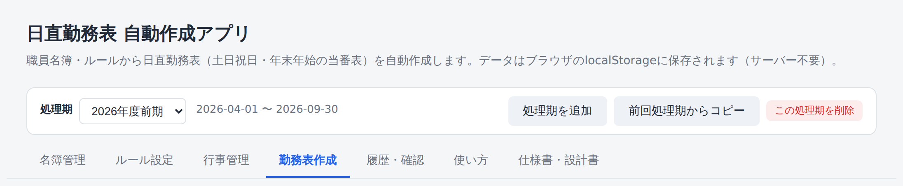
名簿は処理期ごとに管理します。新しい処理期を作ったら、 人事異動を反映した最新のExcel名簿をその都度取り込んでください。
.xlsx で保存します。
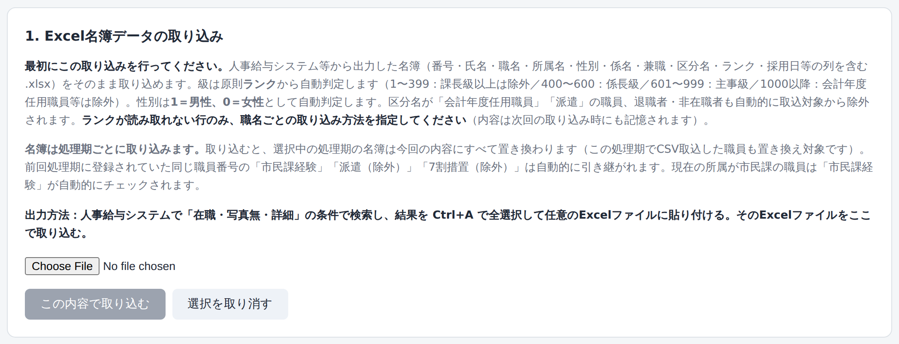
取り込みは追加ではなく置き換えです。手で追加した職員も消えます。 ただし「市民課経験」「派遣（除外）」「7割措置（除外）」「選挙管理委員会（併任）」のチェックは、 前の処理期から職員番号ごとに自動で引き継がれます。異動があった人は取込後に確認してください。
「ルール設定」タブで、割当に使う数値と除外の設定を確認します。 通常は初期値のままで問題ありません。毎回必ず見るのは、育休・産休・病気休暇の期間です。
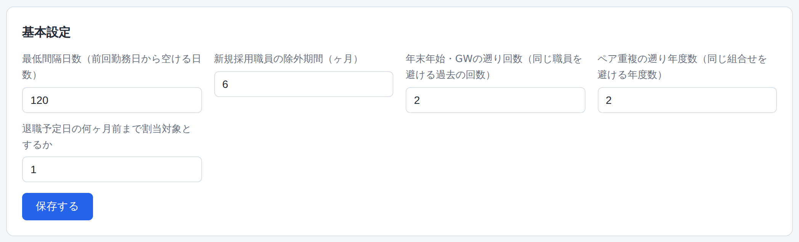
| 項目 | 初期値 | 意味 |
|---|---|---|
| 最低間隔日数 | 120日 | 前回の日直から何日以上あけるか |
| 新規採用職員の除外期間 | 6ヶ月 | 採用から何ヶ月間は割り当てないか |
| 年末年始・GWの遡り回数 | 2回 | 直近何回分と同じ人を避けるか |
| ペア重複の遡り年度数 | 2年度 | 何年度前までのペアを避けるか |
| 退職予定日の何ヶ月前まで | 1ヶ月 | 退職の何ヶ月前から対象外にするか |
そのほか、次の欄も確認してください。
産業まつり・花火大会・選挙などの行事を年度ごとに登録します。 行事の日の前後（既定で30日前〜10日後）は、担当する所属の職員が日直の対象から外れます。
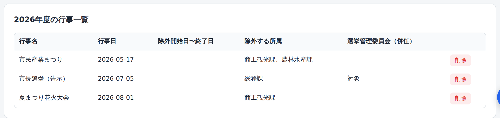
「前年度の行事をコピー」を使うと、去年登録した行事がそのまま複製されるので、今年の日付に直すだけで済みます。
「勤務表作成」タブを開きます。対象期間は選んでいる処理期から自動で入っています。 「土日・祝日・年末年始を自動抽出」を押すと、日直が必要な日が一覧で出ます。
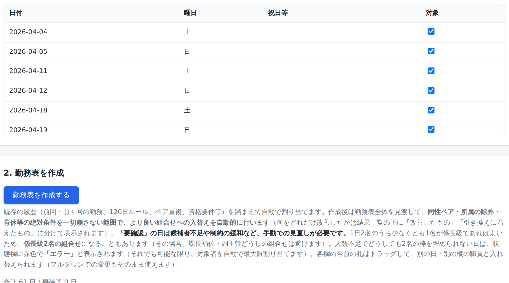
「勤務表を作成する」を押すだけです。数秒で全日程の割当が終わります。 これまでの履歴（前回の勤務日、120日ルール、ペアの重複、資格要件など）を踏まえて自動で決まり、 そのあと全体を見渡して、より良い組合せへの入れ替えも自動で行われます。
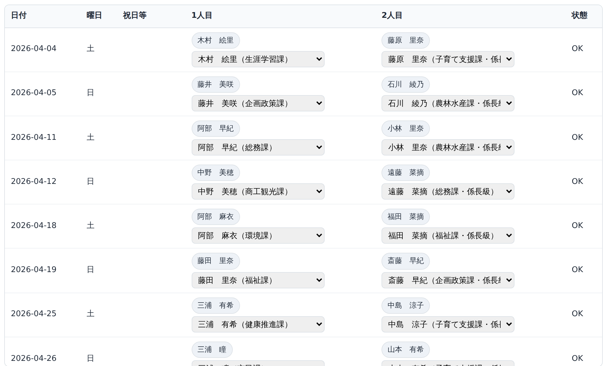
結果一覧の右端の「状態」欄を、上から順に見ていきます。
| 表示 | 意味 | すること |
|---|---|---|
| OK | すべてのルールを満たしています | そのままで構いません |
| 要確認 | 候補者が足りず、ルールを緩めて割り当てた日です | 理由を読み、必要なら手で入れ替えます |
| エラー | 2名の枠を埋められなかった日です（1名のみ、または0名） | 必ず手当てが必要です |
一覧の下には、今期まだ一度も割り当てられていない職員とその理由が表示されます。 偏りがないか、外れている理由に思い当たらないものがないかを確認してください。
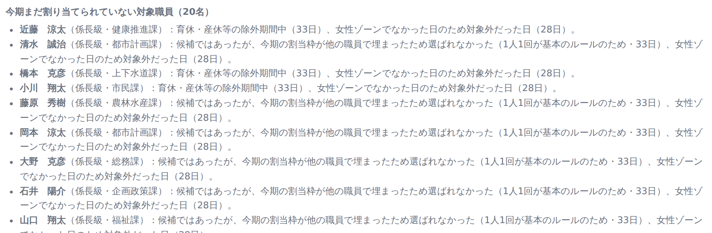
内容を印刷するなどして決裁を受けます。決裁が済んだら、 「決裁が完了したことを確認しました」にチェックを入れ、 「この内容で確定・履歴に保存」を押します。
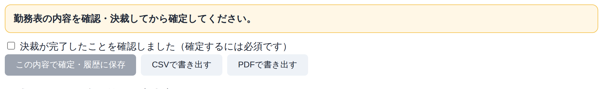
「引き戻して修正」を押すとロックが外れ、やり直せます。 その回の確定分は確定済み履歴から削除されますが、引き戻す前の内容は「作成履歴」として残ります。 修正後は、もう一度決裁のチェックを入れて確定してください。
確定すると、すぐに次のポップアップが出ます。ここで必ず「バックアップを作成する」を押してください。 ファイルがダウンロードされるので、共有フォルダなどこのパソコン以外の場所に保存します。
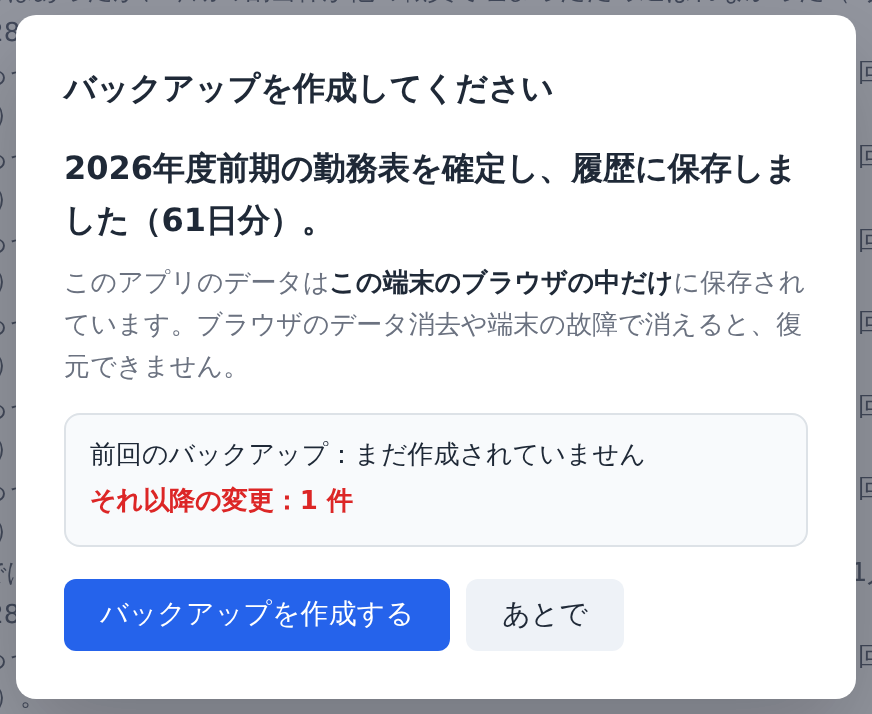
勤務表作成タブの下にあるボタンで書き出せます。
確定済みの勤務表は「履歴・確認」タブからも書き出せます。 次の担当者へ引き継ぐときは「引継ぎ用に書き出す」を使ってください。
| 症状 | 対処 |
|---|---|
| 「要確認」や「エラー」の日が多い | 対象になる職員が足りていません。育休・病休の登録が多すぎないか、 常時除外の所属を広く取りすぎていないか、名簿の取込漏れがないかを確認してください。 |
| 特定の職員がまったく割り当てられない | 結果一覧の下の未割当一覧に理由が出ています。育休期間・所属の除外ルール・ 新規採用の除外期間・120日ルールのいずれかに該当していないか確認してください。 |
| 「確定」のボタンが押せない | 決裁のチェックが入っていません。また、割当を変更するとチェックは自動的に外れます。 |
| 性別が「未設定」の職員がいて割り当てられない | 性別はExcel取込のときだけ自動設定されます（1＝男性、0＝女性）。 元のExcelに性別の列が入っているか確認してください。 |
日直を交代したいという変更届が回ってきたら、確定済みの勤務表にその交代を反映します。 グループウェア等の申請内容の画面をコピーして貼り付けるだけで、氏名と日付を読み取ってくれます。
「履歴・確認」タブの「確定済み履歴」から、変更届の申請者が担当している日を探します。 日付が分かっているときは、その行を目で追ってください。
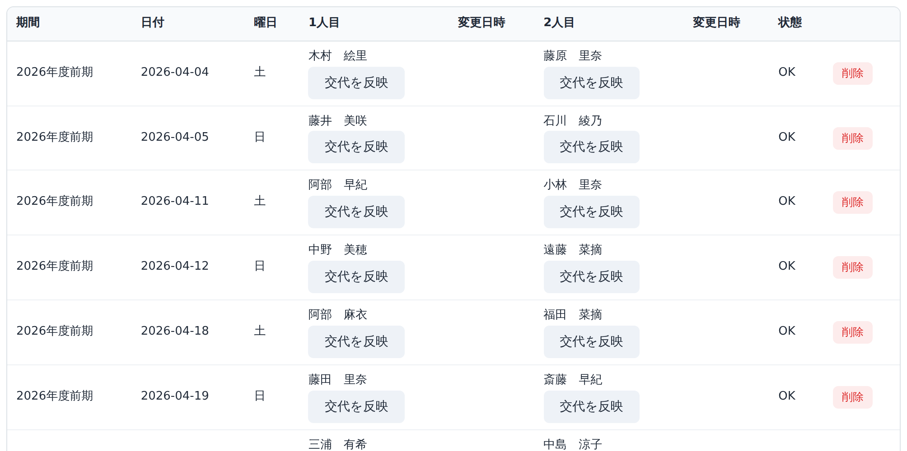
押すのは変更届を出した人（申請者）の行の「交代を反映」です。 交代相手（代わりに入る人）の行ではありません。
例：和田さんが「7/11担当の佐藤さんと代わってほしい」と申請した場合
→ 押すのは和田さんが担当している日（7/10）の、和田さんの欄のボタンです。
ボタンを押すと、次の画面が開きます。一番上に 「この行の担当者 ＝ 変更届の申請者」として、 氏名と日付が大きく表示されます。ここに出ている名前が、変更届の申請者と同じかを必ず見てください。
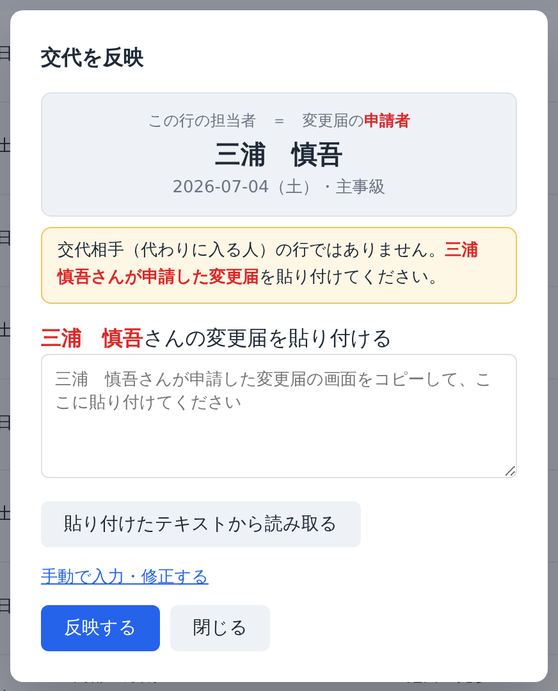
読み取れるのは、次のような形式です。
| 項目 | 例 | 何として使われるか |
|---|---|---|
| 交代相手氏名 | 池田 裕也 | 代わりに入る人 |
| 申請者 | 三浦 慎吾 | この行の担当者と一致するか照合する |
| 申請日 | 2026年06月20日（土）16:52 | 申請日時として記録する |
| 変更する日付 | 2026年07月05日（日） | 交代相手が担当している日として扱う |
読み取りに成功すると、「日付・氏名 ←→ 日付・氏名」のカードが表示されます。 これが、実際に行われる交代の内容です。
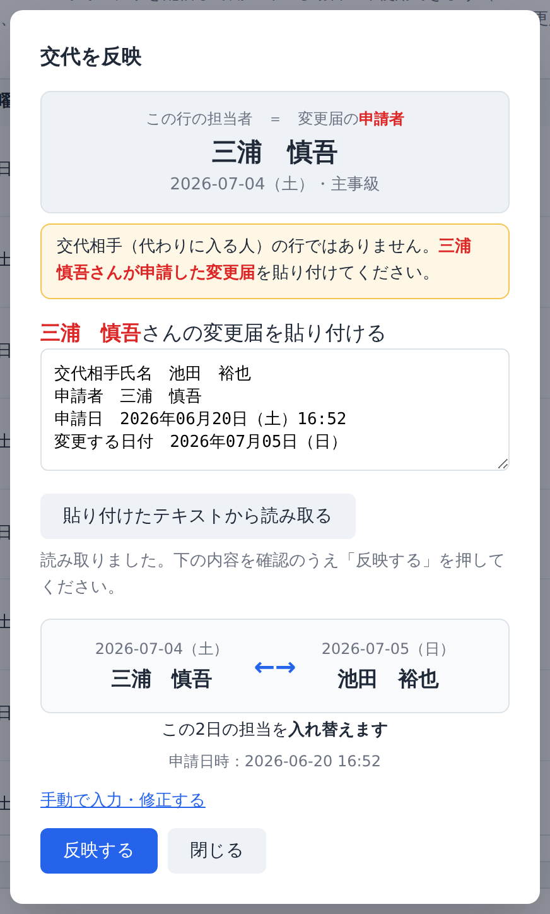
カードの日付と氏名が変更届のとおりであることを確認したら、 一番下の「反映する」を押します。これで確定済みの勤務表が書き換わります。
「変更する日付」に書かれた日に交代相手の担当予定が見つからない場合は、赤字で警告が出ます。 多くは変更届の記入ミスなので、まず申請内容を確認してください。 そのまま「反映する」を押すと、片道の交代（申請者の欄を交代相手に置き換えるだけ）でよいかを もう一度確認するメッセージが出ます。
「手動で入力・修正する」を押すと、氏名・日付を自分で選べる欄が開きます （読み取れなかった項目があるときは自動的に開きます）。 申請内容のスクリーンショット画像から読み取ることもできます。
交代相手の行など、申請者ではない人の行に貼り付けてしまった場合は、 赤い枠で次のように表示され、入力欄には何も入りません（取り違えを防ぐためです）。
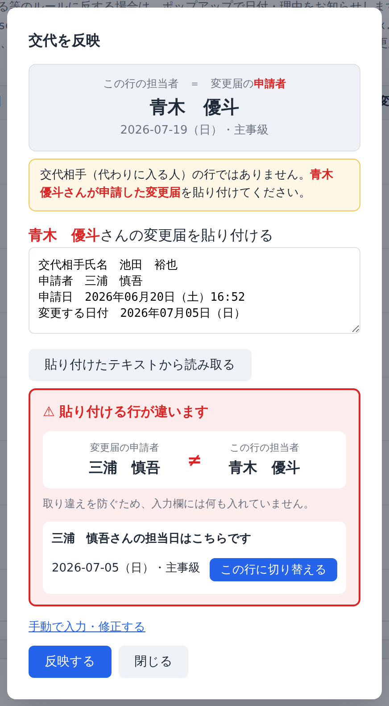
下に「〇〇さんの担当日はこちらです」として正しい行が示されるので、 「この行に切り替える」を押してください。 貼り付けたテキストもそのまま持ち越されて、正しい行で読み取り直されます。
「反映する」を押した直後、変更後の組合せがルールに反していないかが自動で判定されます。 次のいずれかに当てはまると、ポップアップでお知らせが出ます。
内容を確認したうえで、問題があれば手で調整してください。 変更届どおりであれば、そのままで構いません。
続けて、バックアップのお知らせが出ます。ここでも必ず作成してください。
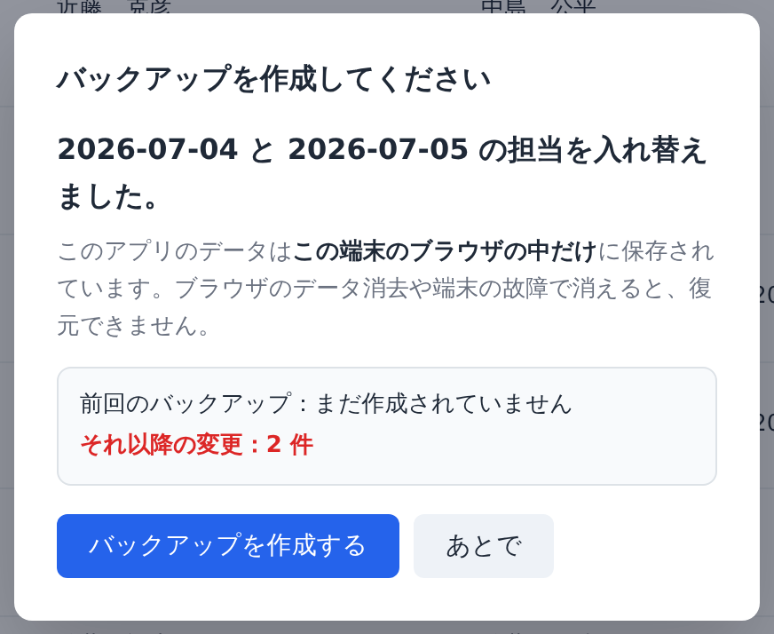
反映した交代は、確定済み履歴の該当の日に変更日時が入り、 入れ替えた2日には同じ色の丸印が付きます。
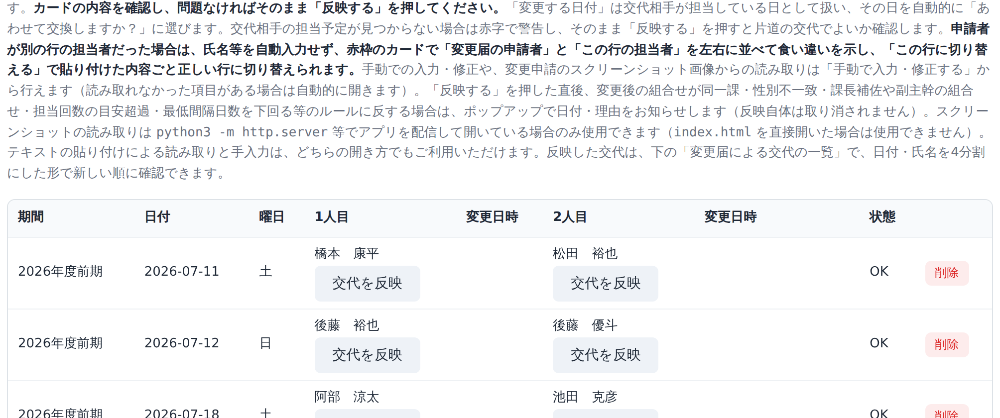
さらに、確定済み履歴の下の「変更届による交代の一覧」で、 「何日の誰」と「何日の誰」を入れ替えたかを新しい順に確認できます。
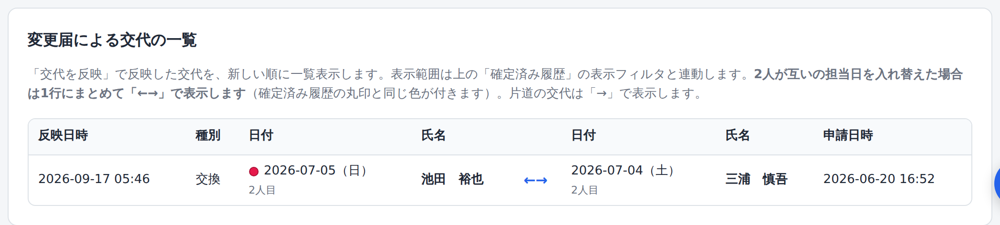
| 症状 | 対処 |
|---|---|
| 「貼り付ける行が違います」と出る | 交代相手の行に貼り付けています。赤い枠の中の「この行に切り替える」を押してください。 |
| 交代相手の担当日が見つからないと赤字で出る | 変更届の「変更する日付」が、交代相手の担当日になっていない可能性が高いです。 まず申請内容を確認してください。片道の交代でよければ、そのまま反映できます。 |
| 氏名が読み取れない | 名簿の表記とコピーした文字が違う（スペースの種類など）ことがあります。 「手動で入力・修正する」から選び直してください。 |
| 画像からの読み取りが使えない | スクリーンショットの読み取りは、アプリをサーバー経由で開いている場合のみ使えます。 テキストの貼り付けと手入力は、どちらの開き方でも使えます。 |
| 間違えて反映してしまった | もう一度「交代を反映」から、手動で元の職員に戻してください。 直前のバックアップから復元し直す方法もあります。 |
| 用語 | 意味 |
|---|---|
| 処理期（しょりき） | 勤務表を作る半年の区切り。前期＝4〜9月、後期＝10〜翌3月。 名簿・ルール・勤務表はすべてこの単位で管理されます。 |
| 係長級／主事級 | 職員の級。1日2名のうち少なくとも1名が係長級である必要があります。 名簿取込時にランクから自動判定されます。 |
| 1人目／2人目 | その日の日直2名。1人目は必ず係長級、2人目はどちらの級でも構いません。 |
| 指定日 | 日直が必要な日。土日・祝日・年末年始（12/29〜1/3）が自動で抽出されます。 |
| 120日ルール | 前回の日直から最低120日（変更可）あけるルール。 |
| 要確認 | 候補者が足りず、ルールを緩めて割り当てた日。手での見直しが必要です。 |
| エラー | 2名の枠を埋められなかった日。必ず手当てが必要です。 |
| 常時除外する所属 | 外局など、日直の対象にしない所属。秘書係と運転手は自動で除外されます。 |
| 性別ゾーン | 日直のペアは同性で組みます。まず女性を優先して割り当て、 割り当てられる女性がいなくなった日から男性に切り替わり、以後その処理期では女性を割り当てません。 |
| 確定 | 作成した勤務表を履歴に保存すること。決裁のチェックが必要です。 |
| 引き戻し | 確定した勤務表を、修正できる状態に戻すこと。 |
| 時期 | すること | 参照 |
|---|---|---|
| 3月ごろ | 前期（4〜9月）の処理期を作り、異動後の名簿を取り込んで勤務表を作成・決裁・確定 | 第2章 |
| 9月ごろ | 後期（10〜翌3月）の処理期を作り、同様に作成・決裁・確定 | 第2章 |
| 随時 | 変更届が届いたら交代を反映 | 第3章 |
| 作業のたび | バックアップを作成し、共有フォルダ等に保存 | 2-10／3-7 |
| 担当交代のとき | バックアップファイルを引き継ぐ／復元する | 第1章 |
データはこのパソコンのブラウザの中だけにあります。 作業の区切りごとに、必ずバックアップを作って別の場所に保存してください。